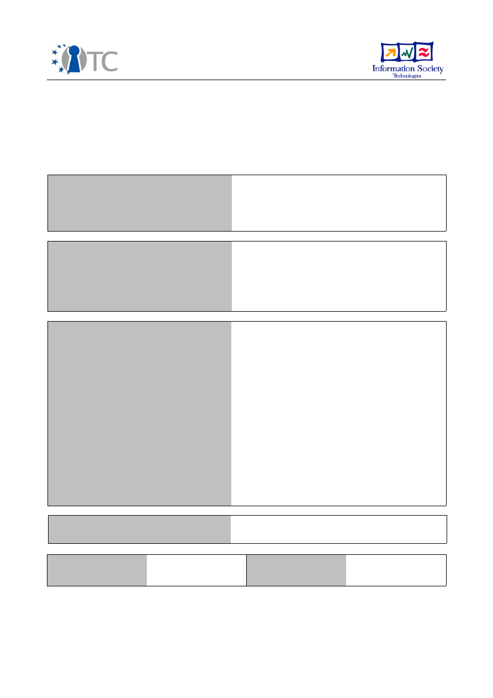
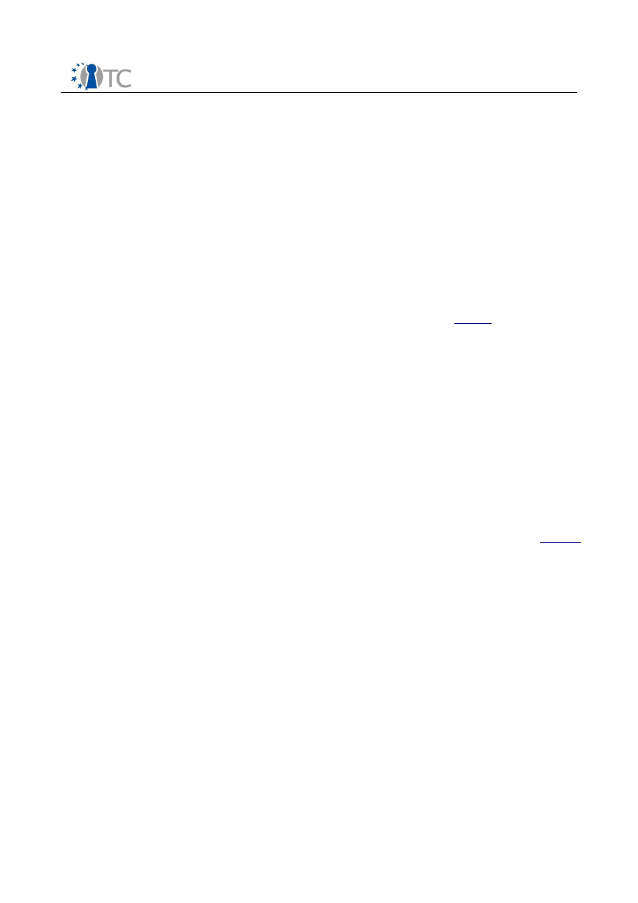

D10.11 Final Exploitation Plan
Project number
IST-027635
Project acronym
Open_TC
Project title
Open Trusted Computing
Deliverable type
External document
Deliverable reference number
IST-027635/D10.11/FINAL
Deliverable title
D10.11 Final Exploitation plan
WP contributing to the deliverable
All WPs
Due date
November 2008 - M36
Actual submission date
November 13
th
, 2008
Responsible Organisation
Hewlett Packard Laboratories, Bristol
Authors
HPLB, Dirk Kuhlmann
With contributions from all OpenTC project
partners.
Abstract
Plan for exploiting OpenTC results at
consortium and individual partner level as of
October 2009. The document is subject to
updates and will be updated in April 2009.
Keywords
OpenTC, results, transfer, exploitation,
productisation, marketing
Dissemination level
Public
Revision
FINAL
Instrument
IP
Start date of the
project
1
st
November 2005
Thematic Priority
IST
Duration
42 months

D10.11 Final Exploitation Plan
FINAL
Table of Contents
1 Introduction...............................................................................................................3
1.1 Technological and Market Factors..........................................................................3
1.2 Implications for Exploitation Planning....................................................................5
2 Exploitation at Consortium Level from M01 to M36...................................................7
3 Exploitation at Consortium Level M37-M42 and beyond............................................8
3.1 TCG standardization...............................................................................................8
3.2 JCS standardization for Java-TSS............................................................................8
3.3 Dedicated OpenTC distribution based on OpenSuSE 11.0......................................9
3.4 Release of OpenTC components as integral part of Xen hypervisor.......................9
3.5 Trusted Virtual Domain administration support in management suites...............10
3.6 Product study for Trusted Virtual Clients..............................................................10
3.7 Trusted Virtual Client Management .....................................................................10
3.8 Cooperation with RESERVOIR Project...................................................................11
4 Exploitation per Partner...........................................................................................11
4.1 Industrial Partners................................................................................................11
4.1.1 AMD ................................................................................................................11
4.1.2 HP ...................................................................................................................12
4.1.3 IBM...................................................................................................................13
4.1.4 Infineon Technologies / Comneon....................................................................14
4.1.5 SuSE/Novell.....................................................................................................15
4.2 Academic Partners and Research Organizations..................................................16
4.2.1 CEA..................................................................................................................16
4.2.2 Budapest University.........................................................................................17
4.2.3 Cambridge University Computer Laboratory...................................................18
4.2.4 IAIK Graz .........................................................................................................18
4.2.5 ITAS Forschungszentrum Karlsruhe.................................................................19
4.2.6 Katholieke Universiteit Leuven........................................................................19
4.2.7 Politecnico di Torino (POLITO)..........................................................................19
4.2.8 Royal Holloway College....................................................................................20
4.2.9 Ruhr University Bochum..................................................................................21
4.2.1 0 Technical University Dresden.......................................................................22
4.2.1 1 TU Munich – Lehrstuhl für Datenverarbeitung (LDV): ...................................22
4.2.1 2 Technical University of Sofia (TUS)...............................................................23
4.2.1 3 TUBITAK-UEKAE............................................................................................23
4.3 Small and Medium Enterprises.............................................................................23
4.3.1 Isecom.............................................................................................................23
4.3.2 Intek................................................................................................................25
4.3.3 Technikon........................................................................................................25
4.3.4 Portakal...........................................................................................................25
Open_TC Deliverable 10.11
2/26

D10.11 Final Exploitation Plan
FINAL
1
Introduction
This document describes the exploitation of OpenTC project results at the consortium
and partner level. In the context of the plan, we describe the steps that have been
taken so far for its implementation and outline exploitation-related activities during
the remainder of the project (M36-M42) and beyond its finalization in April 2009.
OpenTC's goal is to investigate and promote security architectures that combine
Trusted Computing and virtualization technology. We suggested a European approach
to Trusted Platforms Open Source based on Open Source software, since this is likely
to support applicability, acceptability and adoption on a world-wide scale. Deployment
of results was envisaged through enhancement of the state-of-the-art in education,
standardisation, through improvements of hardware, software and system
components, and through influencing and product strategies of industrial vendors and
SMEs.
Regarding short-term exploitation, OpenTC is aimed at helping to define and establish
a European approach for Trusted Computing, to improve the state of the art in a way
allowing for quick adoption, and to promote the results. While these goals have guided
our activities during the ongoing project, our mid-term goals concern options to turn
results into products and the definition of salient areas for future research.
Options of exploiting specific technical results heavily depend on developments in the
overall market. Of particular importance are the proliferation of virtualization
architectures for client and server systems and the evolution of Trusted Computing
technology as defined by the TCG. We will therefore give a brief overview of some
contextual factors before outlining level of exploitation achieved so far as well as mid-
term plans.
1.1 Technological and Market Factors
Virtualization technology has evolved rapidly during the duration of the project in
terms of hardware support, architectures, and application areas. Concepts developed
in OpenTC are in the process of being adopted by product divisions of industrial
partners.
Future directions of Trusted Computing, on the other hand, are less clear cut.
Regarding this technology, a number of issues have remained open during the past
three years, notably concerning questions of certificates for security modules and
platforms, key infrastructures, and TC functionality embedded in chip sets and CPUs.
More often than not, the problems are ultimately rooted in the question of which
vendor or institution will be assigned responsibility for which aspects of a trusted
platform.
Given the potential legal implication of assuming and underwriting such responsibility,
no vendor has made convincing efforts to step forward, as the potential commercial
benefit of offering platforms and security modules with certified properties continues
to be weighted against the risks of legal liability. A fundamental change of this
situation might require regulatory means, for example, a mandatory base level of
certified and attestable security properties for important application areas, or by
introducing a similar level of liability through consumer protection legislation.
However, there are no signs that this kind of regulation might emerge in the short
term.
Open_TC Deliverable 10.11
3/26

D10.11 Final Exploitation Plan
FINAL
The prospects of Trusted Computing technology as a core element of future IT
infrastructures strongly depends on the technology vendors for TC, and it is fair to say
that many of them only support subsets of the overall framework envisaged by the
TCG. As of October 2008, OpenTC partner Infineon is, to the best of our knowledge,
still the only chip manufacturer worldwide who provides Endorsement Certificates for
their line of Trusted Platform modules. As a consequence, it is typically not possible to
prove the existence and operational status of a genuine security module between
platforms from other vendors. This constrains the current role of Trusted Computing
technology to supporting platform-local services such as file system encryption. It
constrains the use of attestation to scenarios governed by a single policy domain, as
any cross-organizational attestation would require preceding out-of-band agreements
on the semantics of attestation certificates.
Endorsement credentials are a prerequisite for platform certificates that are supposed
to be issued by computer vendors. The non-availability of the former makes it
impossible to issue the latter, unless computer vendors start to issue TPM
endorsement credentials themselves. This is unlikely to happen in the near future,
though, since endorsement credentials carry a specific semantics laid down in the TCG
specifications – notably, that the module has been implemented in accordance with
the specifications. It is hard to see how platform vendors, having no insight into the
design, production process, and testing procedures of the chip manufacturers, could
possibly issue this kind of credential. As a consequence, the task of producing the
necessary credentials has to be carried by the customer, who has to set up in-house
certificate authorities (CAs) and defined configuration procedures for this purpose.
This level of overhead is currently only acceptable for large organizations with high
security requirements.
However, TC deployment in large organizations is hampered by the current delivery
and initialization practices for Trusted Computing modules. Following numerous
discussions with public policy advocates and governments, the TCG defined Trusted
Computing as opt-in technology. This requires the explicit and manual enablement of
the Trusted Platform Module by the computer owner, which has since turned out to be
a serious inhibitor for introducing the technology. In particular in large corporate
environments, administrators rely on highly automated build processes for corporate
PCs, and manual configuration steps, as currently required for TC hardware, run
contrary to these automated procedures. As a consequence, corporate use of TC has
so far be constrained to environments with security requirements that are untypical
for the majority of organizations.
Different deployment rules for corporate and consumer devices, as spearheaded by
the GPLv3, could be a possible solution to this problem. In this case, it would be
acceptable to deliver business machines with TC modules already enabled by default,
while the mandatory rule for owner opt-in could be sustained for consumer
architectures. These and similar ideas are currently discussed in the Trusted
Computing group, but another large round of consultation and public discussion might
be required before they could be put into practice.
As of 2008, no TC-capable consumer devices whatsoever have been produced or sold.
Furthermore, OpenTC's research has proven that the security mechanisms provided
by external TPM chips can be circumvented with low-cost hardware attacks, implying
that no serious DRM mechanisms should be built on top of the current architecture.
While the upcoming introduction embedded TPMs in Intel® chip sets makes these
attacks considerably harder, this architecture comes with problems of its own. There is
Open_TC Deliverable 10.11
4/26

D10.11 Final Exploitation Plan
FINAL
currently no indication that the technology will or can be evaluated in a vendor-neutral
fashion, and the embedded are likely to be deployed without endorsement certificates
(see above). This has led to a rather critical reception of Intel's® Trusted Computing
productization plans. In any case, the timing for the introduction of this technology
was such that it was not possible to reflect it as part of OpenTC's activities.
1.2 Implications for Exploitation Planning
The constraints spelled out in the previous section limit the prospects of exploiting
advanced OpenTC results for scenarios geared at private end users in the short term.
While we believe that end consumers could profit from a secure hypervisor that
reports back the trust state of the platform, it remains a fact that TC enabled
platforms are not yet available for this market.
Whether or not PC vendors will decide to change this situation in the near future is a
matter beyond our control. As we are not in position to change the determinants
sketched above, we took care to factor them into the work and the exploitation plan.
Firstly, the exploitation path does not assume the existence of third party trust
providers for attestation identity key certificates. We therefore focus the utilization of
trusted virtualization within the infrastructure of an organization that is supported by a
corporate policy framework and well-defined procedures for platform configuration. To
support this scenario, OpenTC WP03 has produced components that allow corporate IT
administrators to locally generate the required credentials.
Second, there still remain open issues remain that have to be addressed as part of a
productization strategy. While OpenTC has built a framework that allows to measure
and attest to trust properties of a platform, the the factual trustworthiness of many
components is still undefined. WP07 evaluated the core hypervisors and the Trusted
Software Stack OpenTC, which resulted in an improved code base for these elements.
We also provide a decomposed architecture that allows to remove a number of
security critical privileges from the operating systems that act as management
instances for the virtualization layers and to host device drivers in virtual machines
that are isolated against the rest of the systems. For Open Source based operating
systems, we have developed technical solutions at the file system layer for separating
static, security critical components from dynamic ones.
However, full operating system instances remain necessary for hosting device drivers,
and their boot process in turn relies on dozens of helper components, whose
validation was beyond what could be addressed in OpenTC. While the methodology,
the production system and the core infrastructure for providing trustworthy metadata
Open Source package properties are exist, the task of validating many components of
the OpenTC trusted computing base waits to be tackled. How to do this between
industrial partners, distributors and developer communities is an important question
that begs future investigation and research.
As long as this problem has not been solved, one of the most promising strategies for
exploitation is to tie virtualization closer to the physical platform that is delivered to
the end customer, either as part of the standard OS installations installed or shipped
with the platform or as integral part of the hardware. These options are currently
under investigation by industrial OpenTC partners.
The technical work of OpenTC will last until M42, that is, until April 2009. This report
reflects the project status in October 2008 (M36). It is therefore incomplete with
Open_TC Deliverable 10.11
5/26

D10.11 Final Exploitation Plan
FINAL
regard to topics addressed during the last six months. In particular, this concerns our
work on low-level aspects of the secure graphics subsystem, on management aspects
for trusted virtual client platforms. Hence, this exploitation plan is still subject to
changes and will be updated accordingly until M42.
Open_TC Deliverable 10.11
6/26

D10.11 Final Exploitation Plan
FINAL
2
Exploitation at Consortium Level from M01 to M36
OpenTC's work plan and project management was staged to allow the exploitation of
intermediate results. This was done in line with OpenTC's explicitly stated goals of
promoting and enabling rapid technology implementation and transfer and to enhance
the state-of-the-art in science and education and helping to establish a European
approach for Trusted Computing through standardization related activities. In
accordance with the Technical Annex and the work plan, we have addressed the
following areas:
●
Improving the quality of existing software
: All test and evaluation outputs were
communicated back to the developers. Fixes for problems were produced as
part of the project's activities. This has yielded an improved code base for the
hypervisor layers and the TSS which has become part of the standard
distributions.
●
Input for specification activities
: OpenTC's investigation of requirements and
implementation alternatives for dynamic root of trust mechanisms,
bootstrapping and running virtualized OS instances and mobile platforms were
channeled back to the TCG through the industrial members AMD, Infineon, IBM
and HP and were reflected in the ongoing specification activities corresponding
working groups.
●
Support for world-wide standardization
: OpenTC's efforts to produce a
comprehensive IP study for the field of Trusted Computing has proven a
valuable investment. The study was submitted to the TCG upon their request to
support efforts to turn the TC specification into an ISO standard. Furthermore, a
new standardisation project for a Java-based trusted software stack was
launched as part of OpenTCs work.
●
Embedding and distribution of project results
: A large subset of the essential
building blocks for OpenTC has already been prepared and packaged for easy
inclusion in standard distributions for Xen and OpenSuSE, which safeguards
future maintainability.
●
Preparation of productization
: Intermediate results were communicated and
presented to the product divisions of the industrial partners to determine
suitable fields for commercial exploitation. Feedback from these divisions was
used to continuously align the direction of OpenTC's research and development.
In particular, this has led to further investigate issues relevant for trusted
virtualized client architectures during the last twelve months of the project.
●
Improving the state of the art in education
: As part of its dissemination and
training activities, OpenTC has produced several educational packages for
academia and has made them public under Creative Commons licenses. The
demonstrator prototype implementations of OpenTC were extended into a
teaching system for hands-on, practical expositions to the fundamentals of
Trusted Computing and Virtualization. The usefulness of this system for
educational purposes has been tested and proven in several educational
events.
The state of the art in science and research was furthered through an impressive
number of publications, contributions to conferences, workshops, and educational
events. More detailed information can be found in the OpenTC dissemination report.
Open_TC Deliverable 10.11
7/26

D10.11 Final Exploitation Plan
FINAL
3
Exploitation at Consortium Level M37-M42 and beyond
This chapter covers exploitation activities that will be performed cooperatively
between multiple OpenTC partners. The individual plans for each partner are covered
in the next chapter.
Cooperative exploitation of project results for the remaining duration of the project
and beyond are planned as follows:
1. Continued support of ongoing TCG standardization
2. Continuation of Java-TSS standardization
3. Production of dedicated OpenTC distribution based on OpenSuSE 11.0
4. Release of OpenTC components as integral part of Xen hypervisor
5. Integration of Trusted Virtual Domain Management with proprietary
management suites
6. Development of Management solutions for Trusted Virtual Clients with particular
focus on SME support.
Descriptions and timelines for these tasks are elaborated in the following sub-
chapters.
Note that plans of the industrial partners for transferring OpenTC results into products
depend on support by their product divisions and endorsement by their corporate
management. They depend on current business strategies that may be subject to
change.
3.1 TCG standardization
●
Partners:
AMD, HP, IBM, Infineon, IAIK, Polito, RUB
●
Timeline:
Ongoing activity, open ended
●
Description:
For the whole duration of the project, results of OpenTC have
been channeled back to working groups of the Trusted Computing Group via
TCG representatives of the industrial partners. Several academic partners have
gained the status of TCG liaison members and are thereby entitled to
participate in the specification activities.
The industrial partners will continue to participate in the work of the TCG, in
particular with regard to the planned ISO standardization of the TCG
specification. We anticipate that OpenTC results can be leveraged for
standardization activities in the areas of TPM virtualization, Trusted
Infrastructure, and Mobile Trusted Computing.
3.2 JCS standardization for Java-TSS
●
Partners:
IAIK, HP
●
Timeline:
Q1/2009 – Q4/2010
●
Description:
This activity concerns the standardization of a Java-implemented,
TCG compliant Trusted Software Stack (TSS) through the Java community
Open_TC Deliverable 10.11
8/26

D10.11 Final Exploitation Plan
FINAL
process. Supported by OpenTC industrial partners, this effort was launched by
by IAIK Graz, who will drive it to finalization. IAIK will also continue to support
the Java-based CA components for generating TC-certificates that have been
published under Open Source licenses.
3.3 Dedicated OpenTC distribution based on OpenSuSE 11.0
●
Partners:
SuSE/Novell, POLITO, HP, IBM, RHUL, Portakal
●
Timeline
:
M38-41
(Distribution based on demonstrator prototype)
M41-
(Update to new kernel and hypervisor versions)
●
Description: The majority of components developed in OpenTC will be packaged
as part of a dedicated OpenSuSE Linux distribution. The result will support
client-centric usage scenarios such as secure web browsing and corporate
computing at home and test environment for educational purposes. The time
from M38 to M41 will be used to port components of the
CC@H
demonstrator
prototype from the current development environment OpenSuSE 10.3 and Xen
3.1 to the more recent stable release of OpenSuSE 11.0 with Linux kernel
version 2.6.25 with Xen 3.3 packaged on purpose for OpenTC.
Future contact point for future support and maintenance of OpenTC
components are their respective developers, while SuSE/Novell will continue to
support the build system for creating distributions. The distribution will continue
to be used as educational system, we anticipate that efforts for system update
will be done by the parties employing the system for this purpose. We also
envisage to use the resources of student interns and interested members of the
Open Source community for keeping the distribution updated for a reasonable
period of time, that is, until commercially supported solutions for trusted
virtualized clients become available.
The time from M38 to M41 will be used to port components of the
CC@H
demonstrator prototype from the current development environment OpenSuSE
10.3 and Xen 3.1 to the more recent stable release of OpenSuSE 11.0 with Linux
kernel version 2.6.25 with Xen 3.3 packaged on purpose for OpenTC.
3.4 Release of OpenTC components as integral part of Xen hypervisor
●
Partners:
CUCL, SuSE, HPL (XenSource/Citrix)
●
Timeline
: Q3-Q4/2009
●
Description
: Due the non-synchronized timing for updates of the Linux kernel,
OpenSuSE and Xen distributions, we may face a second round of porting efforts
to include Xen 3.4. Such an update would be desirable, as it would include the
first supported release of Xen with OpenTC components. However, the
corresponding versions for OpenSuSE and the Linux kernel can not be
determined before spring 2009.
Given the current planning for the release, this task is unlikely to be addressed
Open_TC Deliverable 10.11
9/26
D10.11 Final Exploitation Plan
FINAL
before M42 and is therefore scheduled as part of exploitation efforts beyond
this point. The inclusion of OpenTC components still under development is likely
to be stretched across multiple Xen releases, in particular with regard to the
ongoing work on graphics support, secure graphical user interfaces, and
hierarchical integrity management.
3.5 Trusted Virtual Domain administration support in management suites
●
Partners
: SuSE/Novell, IBM, HP
●
Timeline
: Q4/2008 – Q2/2010
●
Description
: The introduction of Trusted Virtual Domains in Datacenters
introduces a new level of DC infrastructure management that is currently not
reflected in available software solutions. This concerns the reporting of trust
properties as well as 'partial views' of a datacenters that are constrained to
physical nodes and VMs that are elements of a TVD.
The OpenTC partners involved in WP05 will prototype these aspects using the
SuSE/Novell
Orchestrator
suite. Subject to pending licensing negotiations, this
work will be performed in Q4/2008 and Q1/2009. Based on the results, IBM and
HP plan to work on similar solutions for their Tivoli resp. OpenView management
suites from mid 2009 onwards. Target for productization is Q3/2010.
3.6 Product study for Trusted Virtual Clients
●
Partners:
HP, CUCL (Citrix/XenSource)
●
Timeline:
Q4/2008-Q1/2010
●
Description:
One of the most exiting areas for exploiting are Trusted Virtual
Client platforms. Conceptually, they reflect the OpenTC use cases of Corporate
Computing at Home (
CC@H
) and secure browsing developed from M01 to M24
of the project. OpenTC has therefore extended some of its technical work
beyond M36. Based on feedback from product divisions, current investigation
and prototyping efforts are focused on specific aspects of Secure Graphical User
Interface. Of particular interest is the feasibility of a common driver stack for
both non-proprietary operating systems, the support of hardware accelerated
graphics functions for virtual machines as well a questions of usability.
The architecture and feature set for virtualization-enabled end user platforms
will be explored in cooperation with product divisions in HP and Citrix. OpenTC
results will be exploited to define the necessary hooks for TC technology in the
hypervisor layer, for providing security critical functionality as decomposed
services as well as the low-level technology for safely sharing input and output
devices. The current target for TC and virtualization enabled client platforms is
Q1/2010, subject to approval and support from product divisions and
management.
3.7 Trusted Virtual Client Management
●
Partners:
HP, SuSE/Novell
●
Timeline:
start Q1/2009, end Q4/2009
Open_TC Deliverable 10.11
10/26

D10.11 Final Exploitation Plan
FINAL
●
Description:
An important lesson learned from OpenTC is concerning the
significant overhead for configuring, maintaining and managing trusted virtual
platforms. The building blocks provided by OpenTC allow to perform all steps
necessary, but the practical use of the technology currently mandates a
thorough understanding of TC technology and the overall architecture. While
this level of expertise can be mustered by large organizations with dedicated IT
support, we consider the current level of support insufficient for application in
SMEs. Further, OpenTCs investigation of management aspects was geared
exclusively at datacenter scenarios.
In order to address management issues for 'farms' of corporate end user
platforms and to support the use of Trusted Virtual Clients in smaller
organizations, it is essential to provide a system that comprises the relevant
phases for deploying and managing these platforms. In the absence of third
party providers, such a solution must include a subsystem for generating TC
credentials, another one for generating and recording known-good trust metrics
for original and patched configurations, a deployment mechanism and a
monitoring system to support the administration activities.
Building on our experiences gained in about datacenter and TVD management,
the partners plan to explore options for such a management solution, either as
a product or, more likely, as a combined product-service offer that integrates
configuration, patch and trust management.
3.8 Cooperation with RESERVOIR Project
OpenTC has initiated a technology transfer with the FP7 Project Resources and
Services Virtualization without Barriers "RESERVOIR" to provide for re-use of our
security technology. RESERVOIR focuses on "massive scale deployment and
management of complex IT services across different administrative domains, IT
platforms and geographies"
1
In particular for mutually mistrusting domains, secure
virtualization technologies including trusted computing are essential to guarantee
overall security in spite of potentially misbehaving service providers.
4
Exploitation per Partner
This chapter covers the exploitation plans that were or are pursued by the OpenTC
partners independently.
Note that plans of the industrial partners for transferring
OpenTC results into products depend on support by their product divisions and
endorsement by their corporate management. They depend on current business
strategies that may be subject to change.
4.1 Industrial Partners
4.1.1 AMD
AMD has provided vital support at the early stages of the project, supplying the
hardware and expertise necessary to gather first practical experiences with the new
1 http://www.reservoirproject.org/
Open_TC Deliverable 10.11
11/26

D10.11 Final Exploitation Plan
FINAL
technology. AMD's practical research and development focused on aspects of a
trustworthy boot process.
AMD is a founding member of the Trusted Computing group and therefore has a
genuine interest in promoting the technology by helping to create a research and
development ecosystem. AMD's main exploitation target was to produce a reference
implementation for a novel boot process that could be contributed to the the TCG
specification process, namely, the Dynamic Root of Trust (DRTM) mechanism.
AMD has driven the creation of a TCG group for the specification of DRTM solutions. A
sub-working-group under the PC Client working group to define a unified DRTM
solution for use in the industry. The research results from OpenTC provided a starting
point for the work in TCG. A first version of the specification is expected in 2009,
concluding AMD's exploitation of OpenTC results. In accordance with OpenTC's aims,
the reference implementation was made publicly available.
4.1.2 HP
HP has directed the technical work of OpenTC throughout the project. As one of the
founding members of the TCG, the company has lead the specification efforts on
Trusted Computing, chairing the technical work of the TCG since more than half a
decade.
An important exploitation goal for HP was and is to grow and foster a European
research network on Trusted Computing, to build the necessary expertise and to
further public understanding of and access to this technology. This goal was addressed
during the project, and the material produced for dissemination and training will
greatly simplify to communicate TC fundamentals in future.
Apart from its continued support for specifying, standardizing and propagating TC
technology, HP pursues the following paths for exploiting OpenTC results:
●
Future PC products:
Open Source based Solutions, Services and products
constitute important parts of HP's product portfolio. Parts of the OpenTC
framework, building blocks and technical knowledge are investigated by HP as
foundation of a Trusted Virtualized Client architecture. OpenTC was
instrumental to make Open Source based hypervisors strong candidates for the
choice of the hypervisors that will underly these systems in future
2
. A dedicated
research program of HP Laboratories Bristol has been created to further define
and develop features for TVCs in close interaction with HP's product groups for
workstations and notebooks. The concept of Trusted Virtual Client should be
introduced in an incremental fashion, starting with basic, out-of-the-box support
for virtualization that, however, already includes the necessary hooks for TC
support and secure user interfaces.
●
Improved interoperability:
As a provider of 'best-of-breed' solutions, HP
invests considerable resources to improve the interoperability of the mainly
Open Source targeted architecture of OpenTC with proprietary operating
systems. This line of exploitation is already in progress as of Q4/2008 and is
likely to continue throughout 2009 and 2010. Besides aspects of security, these
activities target to improve the performance characteristics for graphics and
audio in-and output for virtualized OS instances. OpenTC's work on
disaggregation and reduction of the Trusted Computing base for hypervisors
2 http://www.businessweek.com/magazine/content/08_38/b4100084242512.htm
Open_TC Deliverable 10.11
12/26
D10.11 Final Exploitation Plan
FINAL
has proven an ideal starting point for exploring the feasibility of slim, dedicated
applications that run generically on the virtualization layer
3
.
●
Management framework for virtualized servers:
The deployment of TC-
enabled HP server platforms has suffered unexpected delays. The transfer of
OpenTC results for TPM based identification of physical platforms and VMs and
concepts for hierarchical and reversible integrity management had to be
postponed until Q2/2009 as prerequisite for transferring components for TVD
and trusted virtual instances (see section 3.5).
●
Trusted metadata for Open Source Software:
To address the existing gap
between the current status quo and the ultimate goal of attestable platforms
(see section 1.1), HP explores options of dedicated OS and software
distributions that Open Source based and tied more closely to the hardware
platform. This option did not yet exist when OpenTC took up its work, but has
since become more realistic, as HP (as well as other platform vendors) have
introduced a line of consumer devices that is exclusively based on on Open
Source
operating
systems
and
applications.
Supplying tailored and trustworthy releases of OSS distributions is thereby
moving closer to the core business. This requires the provision of reliable
metadata about the properties of the (Open Source) software shipped with
these platforms. As a first step in this direction, HP has launched the
FOSSology
4
initiative for Open Source analysis and development. It is so far primarily geared
at licensing issues, but the framework and code base, which has been published
under Open Source license, is general enough to cater for other types of
metadata as well, including specifications, test results, cryptographic
fingerprints and so on. Hence,
FOSSology
provides suitable environment to
support systematic efforts for validating properties of Open Source based
software.
As outlined in section 1.2 and 3.3 of this document, it remains a formidable challenge
to establish the task of OSS validation as a sustainable effort, and supporting actions
as well as additional research is necessary to address this problem.
4.1.3 IBM
IBM is exploiting OpenTC results in four areas: IBM-internal research projects,
initiatives on security for Cloud Computing, products supporting secure virtualization,
and customer engagements piloting secure virtualization technology.
●
IBM Research Projects:
Based on the OpenTC results and acquired skills, we
have launched two IBM-internal research projects. The first is Project Phantom
that aims at building an intrusion detection system for virtualized machines.
The key benefit is that instead of running intrusion detection in each VM, a
dedicated security VM then monitors multiple customer VMs. The second project
is called ‘Integrated Virtual Datacenter”. Its goal is to develop a closed-loop
approach to security management of virtual machines. This means that
provisioning, execution, audit, and remediation are linked together into an
overall loop for managing the security of virtual systems. This then allows for
automatic identification and machine-supported remediation of security
3 Ibid.
4 http://fossology.org/
Open_TC Deliverable 10.11
13/26
D10.11 Final Exploitation Plan
FINAL
problems in virtual systems. More information can be found in the public
Phantom announcement
5
.
●
IBM Initiatives
: IBM is continuing its large investments in Cloud Computing.
The goal is to build scalable and adaptive datacenters using virtualization. This
strategy has security as one of its main differentiators.
Based on the knowledge gathered in OpenTC we have contributed to the secure
provisioning components of this strategic initiative. The concept of Trusted
Virtual Domains will be used as a foundation for guaranteeing customer
isolation in IBM’s cloud offerings.
●
IBM Products
: Besides contributing to the strategic cloud computing initiative,
IBM is currently piloting new extensions to IBM’s products. One main area that
we investigate enhancing our auditing products to support security audits of
virtual systems. This would allow IBM’s customers to automatically identify
security violation while validating virtual systems configuration against given
best practices.
●
Customer and Analyst Events
: We have demonstrated the OpenTC results to
multiple customers. We are currently in the process of evaluating potential
customer pilots of selected OpenTC technologies. The goal is to gather feedback
to further tailor our offerings to satisfy real-world customer requirements.
Demos of Project Phantom and iTVDc were presented to analysts at the IBM
Security Summit, Boston, Oct. 1, 2008. In addition, Project Phantom was
presented at VMworld and RSA 2008.
4.1.4 Infineon Technologies / Comneon
Infineon Technologies AG (IFX) and Comneon GmbH (COM2) share a common
exploitation strategy, as Comneon GmbH is a 100% subsidiary of Infineon
Technologies AG.
The market for mobile security products, including anti-virus, VPN, data and file
encryption and mobile identity management applications is estimated to reach almost
5 billion US Dollars by 2011 and will be installed on 247 million mobile devices
6
.
Infineon will continue to follow a combined hardware/software solution strategy for
mobile solutions that has enabled them to establish themselves as a market leader.
The mobile phone market is characterized by multi-stakeholder scenarios which have
to account for requirements from mobile phone manufacturer, mobile network
operator, service provider(s) and the end user. In this regard, it substantially differs
from the standard PC market. The architecture of a system security solution deployed
in a mobile phone therefore has to reflect these demands in order to isolate the
execution domain of critical assets.
We believe that the justification for increased security solutions will depend both on a-
priori stakeholder requirements as well as observed attack scenarios. Knowledge
gained while investigating and implementing new security technologies and
components in OpenTC will be incorporated in Infineon's and Comnenon's work on
platform development. The functionality will be used to meet the requirements of
future markets, and the project results bill be used to bring mobile phone solutions to
5 http://www-03.ibm.com/press/us/en/pressrelease/23833.wss
6 http://www.juniperresearch.com/shop/viewreport.php?id=37
Open_TC Deliverable 10.11
14/26

D10.11 Final Exploitation Plan
FINAL
market that implement a comprehensive security framework.
Recent technologies such as defined by the OMTP (Open Mobile Terminal Platform)
forum or the TCG mobile phone working group will be addressed in line with market
and customer requirements. OMTP is an operator sponsored forum which aims to
serve all stakeholders in the mobile phone value chain by gathering and driving
requirements. In order to promote the adoption of new services across a range of
platforms, the requirements are formulated independent of specific technology
platforms.
OMTP aims to
●
Make applications more usable so that user adoption is rapid;
●
Allow simpler customization of services;
●
Allow Mobile Network Operators (MNOs) to create a similar look and feel across
platforms;
●
Standardize non-differentiating features (also called defragmentation.
Infineon and Comneon have followed and participated in the standardisation activities
of the relevant OMTP working groups (Application Security WG, Hardware Security
Requirements WG) throughout the OpenTC project as part of the WP08 activities, and
these efforts will continue beyond OpenTC
Similarly, the work of the TCG Mobile Work Group was also referenced by WP08
throughout the OpenTC project. The industrial partners will exploit the knowledge
which have gained from OpenTC by applying it to 'real world' issues such as the
security life cycle, which often determine whether a technology is in reality viable.
The WP08 demonstrator is based on the porting of the L4 Linux operating system to
the Infineon X-GOLD
(TM)
208 baseband controller (formerly S-GOLD
(TM)
3). Further,
selected security features of the X-GOLD
(TM)
208 are used to emulate Trusted Platform
Module functions. The small micro-kernel of L4 Linux can be vetted more easily and
allows to partition the software architecture. This is an important factor when building
security features such as secure storage or TPM emulation. Both features are part of
the WP08 secure wallet implementation.
Concerning the open OMTP and TCG standards, Infineon and Comneon will gauge the
suitability of the technology and prototype developed within WP08 to meet the
requirements of all stakeholders. For OMTP, the relevant standardisation activities are
'Trusted Environment OMTP TR0' (concentrating on basic security features such as
secure boot, and secure flash memory update) and 'Advanced Trusted Environment
OMTP TR1' (focusing on advanced security requirements which the market may
require in the near future). The Advanced Trusted Environment defines security
enablers such as those developed in WP08, namely secure storage and trusted
execution environments.
4.1.5 SuSE/Novell
SUSE Linux Products GmbH is planning the utilization of Trusted Computing
technology in two of its main activity areas: 1) The openSUSE distribution community
and 2) The SUSE Linux Enterprise code base.
●
All currently existing Trusted Computing components from the OpenTC project
have been integrated into the openSUSE community platform and will be
Open_TC Deliverable 10.11
15/26
D10.11 Final Exploitation Plan
FINAL
contained at full functionality in the openSUSE-11.1 release planned for
publication near the end of 2008. This includes the boot loader, TPM
administration, PCR read-write access, virtual TPM driver in Xen, Xen PCI
delegation and sealing for secret persistent storage support. We will support the
building of VM images that maintain read-only boot media and read-write
mounted overlays in infrastructures provided by SUSE to the community
(project name: "SUSE Studio"), similar to the building of the proof-of-concept
demonstrator prototype 2007 (
CC@H
). Additional enhancements such as GUI-
based trusted boot systems administration and fine-granular boot path
measuring to allow for first steps in property based attestation are under way.
SUSE will support the public distribution of the Open_TC results as a package for
all interested end-users. With growing maturity and acceptance of this
technology, Open_TC packages will become an integral part of the products
enabled for virtualized and trusted computing, providing a significant added-
value for the users.
●
In cooperation with and following the demand of hardware vendors outside the
OpenTC consortium, the SUSE Linux Enterprise Server and Desktop release 11
will include full Trusted Computing technology support. Feedback and feature
wish-lists from customers indicate that the functionality as demonstrated with
the PoCP 2007 receives good recognition in enterprise environments, and
corresponding products are expected to be completed in development in
Q2/2009. Contrary to other security-related features, the Trusted Computing
components are not marked as technology preview, but as a basic enablement,
which marks a fully supported feature. The Trusted Computing functionality will
constitute a basic part of the release, but customers will be free to enable or
disable this functionality.
SuSE expects hardware vendors to increasingly combine virtualization and systems
management features of the Linux based operating system and software products into
an integrated value proposition. Trusted Computing delivers a robust notion of identity
not only of humans that interact with the IT infrastructure, but also the identity of
systems that are involved, regardless of those systems being virtualized or physical.
This form of identity in the Data Center is a cornerstone to enable automation and
high availability in cloud computing. We will therefore support a further integration of
virtual Data Center concepts that are already sold by Novell/SUSE with of Trusted
Computing technology (see sections 3.5 and 3.7)
4.2 Academic Partners and Research Organizations
4.2.1 CEA
CEA, a public research institute, will exploit the results of OpenTC in several ways.
During the project CEA has developed a new static analyzer for the ANSI C language
and a subset of the C++ language. This analyzer, the open-source Frama-C toolkit, is
being promoted to CEA's customers, including those who are currently using the
previous generation CAVEAT C analysis toolkit also produced by CEA.
As of October 2008, the Frama-C toolkit prototype is shared and developed by
different partners of CEA, such as the University of Paris XI. Prior to any commercial
activities, CEA will improve and complete the toolkit. Once Frama-C has become
Open_TC Deliverable 10.11
16/26
D10.11 Final Exploitation Plan
FINAL
sufficiently stable and robust, CEA plans to release this product as a successor of
CAVEAT C.
Static analysis of programming languages are the core research activity of CEA's LSL
laboratory, and OpenTC will enable future research activities in this field, acting as a
springboard for follow-up research projects. CEA plans to participate and submit
project proposals in national (PFC, RNTL, Poles de Compétitivité, etc.) as well as
international frameworks (ITEA, FP7, MEDEA+, etc.). These proposals will be targeted
at completing the toolkit and at investigating aspects of C code analysis that were
highlighted through the current project but are currently unsolved.
While OpenTC has shown that non-critical domains, namely operating systems and
more generally security-related software, merit applying static analysis techniques,
static analysis tools are typically geared towards code for embedded applications that
can be built using a restricted subset of the C language. In contrast, OS and hypervisor
implementations require the full expressiveness of the C language and the inclusion of
inline assembly code. Multiple memory layers, concurrency and asynchronous
interruptions create additional challenges that require further investigations, and CEA
will continue research on these aspects. Results will be published in academic papers
submitted to journals, in magazines and international conferences.
4.2.2 Budapest University
Budapest University of Technology and Economics was involved in the security and
robustness testing of various OpenTC components. The results of these activities
contributed to the increase of security level that these components can provide and
the decrease of potentially exploitable security weaknesses in products where these
components will be used.
During this testing activity the BME team developed special modules for the FLINDER
Automated Security and Robustness Testing Framework
7
to support Trusted
Computing platforms.
Our plan of exploiting knowledge gained and software modules developed during
OpenTC are twofold. On the one hand, BME will use this knowledge in its educational
activities as practical experiences. As the evaluated software components are open
source, they can be used for such purposes, unlike other commercial applications,
where not just legal issues prohibit the demonstration of security vulnerabilities, but
either the source codes are not available.
On the other hand, the FLINDER Automated Security and Robustness Testing
Framework will be exploited in the form of paid services. Due to professional reasons,
the tool was made as an in-house tool and it is not in a state that it could be marketed
as a stand-alone software. From technical point of view security testing requires
remarkably large customization efforts for each special case, that's why BME plans to
use the capabilities of the FLINDER framework as paid services. Some other
customers, not just OpenTC partners, have been using these Flinder security testing
services.
7 http://www.flinder.hu/
Open_TC Deliverable 10.11
17/26
D10.11 Final Exploitation Plan
FINAL
4.2.3 Cambridge University Computer Laboratory
CUCL is exploiting the outcomes of the Open TC project in a number of different ways.
Firstly, the technical work undertaken in the project with regard to the Xen virtual
machine monitor has been published as open source and made available to the
community. This has seen interest from government organizations as well as various
researchers internationally.
Secondly, and in part as a consequence of this, recent months have seen the
formation of the Xen Client Initiative (XCI), an industry group of commercial
organizations interested in developing client security solutions based around Xen. The
XCI is an open initiative: however various of the partners - including Citrix Systems
(who acquired XenSource in 2007) - are internally prototyping products destined for
the mass market. These products make direct use of software and architectures
developed by the OpenTC project.
Thirdly, there are plans for ongoing research in the University of Cambridge, which will
build upon the outputs of Open TC. One project hopes to look at how to develop a
consumer-focused digital economy which enables viral purchase and sale while
maintaining high levels of privacy and preventing shilling.
Finally, together with IAIK, we participate in an effort to incorporate ideas drawn from
OpenTC in a Java standardization process defining a new API for Trusted Computing.
4.2.4 IAIK Graz
IAIK will exploit the results of the work within OpenTC on multiple paths.
Implementation results of IAIKs work have been published as open source
8
and are
available to be freely downloaded. We follow a dual licensing scheme here, where
usage within research, education and open source (GPL) type projects are free of
charge; for commercial use licenses are available. These products will continue to be
maintained beyond the end of the project.
IAIK will continue the standardization activity within the Java Community Process and
are working on a Java Specification Request (JSR) 321. The expert group, which initially
was quite small, has now grown to four companies (Sun, Intel, Samsung and IAIK) and
includes individual experts. The final results of this activity will only be available after
the end of the project but will be exploited by IAIK through publications and
implementations.
IAIK’s initially small team of researchers in the area of trusted computing has doubled
since the beginning of the project. IAIK is participating in two other funded projects
that cover trusted computing related topics:
●
TOPAS, a nationally funded project in the area of mobile trusted computing
●
SECRICOM, an EU-FP7 projects in the Security area dealing with trusted mobile
communications
IAIK has also applied for further nationally funded projects (decision pending) and will
continue to work in this field of research.
IAIK has been offering a class on Trusted Computing which so far has been taken by
roughly 50 students. IAIK will also host ETISS, the European Trusted Infrastructure
8 http://trustedjava.sourceforge.net
Open_TC Deliverable 10.11
18/26

D10.11 Final Exploitation Plan
FINAL
Summer School in 2009.
4.2.5 ITAS Forschungszentrum Karlsruhe
ITAS main line of work concerns system usability and technology assessment. We
intend to communicate findings from OpenTC as part of our work for the European
Parliament's Scientific Technology Options Assessment Panel (STOA) and for the Office
of Technology Assessment at the German Parliament (TAB). To support this effort, we
aim at publishing results of the project in journals and on our website. Further, ITAS
intends to conduct follow-up research on utilizing Trusted Computing and
virtualization, assessing these technologies in general and aspects of usability and
acceptance in particular. We plan to conduct interviews with experts and users and to
continue fostering a related dialogue with the interested public.
4.2.6 Katholieke Universiteit Leuven
The Katholieke Universiteit Leuven mainly uses the achievements of OpenTC in
education and research activities and will continue to do so. E.g., Trusted computing
has also become a topic of the biennial international course on cryptography and
computer security, and KUL has published and presented OpenTC funded research
results in peer reviewed scientific conferences and journals.
Results of the project are exploited in the national IBBT QoE project which deals with
the security of mobile terminals, and BCRYPT, the Belgian inter-university research
network on cryptology and information security. KUL continues to investigate trusted
computing, in particular the adaptation of the technology for constrained and
reconfigurable devices. This research is performed in collaboration with Philips
Research Europe and its spin-off Intrinsic-ID.
4.2.7 Politecnico di Torino (POLITO)
POLITO plans to exploit knowledge, components and material generated in OpenTC in
multiple ways.
1. The OpenTC Proof of Concept prototype and the related documentation, like lab
instructions and slides, have proven valuable educational tools. They will be
used in a general course for undergraduate students about computer and
network security, complementing lectures about Trusted Computing with a
practical experience in a laboratory. The training material produced within the
consortium will be used in short courses for PhD students.
2. The OpenTC build system - which is based upon the SUSE public build service
and SUSE Kiwi tool for creating system images – allows to easily build
prototypes based on virtualization with or without Trusted Computing
components. It will be used in future for next theses and projects whenever
automated creation of prototypes is needed.
3. The
What You See Is What You Sign
(WYSIWYS) proof of concept application will
be used to bring the attention of experts in the field of digital signatures to
design concepts and technologies for secure architectures suitable for
Electronic Signature applications. Furthermore, the proof of concept will be used
to foster standardization on this subject: currently there are no standards
supporting the European directive on Electronic Signature about application
architectures, but only requirements specifications like CEN CWA14170 and
Open_TC Deliverable 10.11
19/26

D10.11 Final Exploitation Plan
FINAL
CWA14171.
4. Subsystems and components developed within OpenTC like Trusted Channel,
Key and configuration Management Adaptation Layer (KMA) - a subsystem to
enforce protection of critical files for generic applications - and Trusted Platform
Agent - which manages the credentials required for the TCG framework – will be
necessary for real usages of the OpenTC prototype and related components.
Many of them fill the current gaps in the availability of Open Source tools for
TPM usage and management.
5. Knowledge and expertise gained during OpenTC as well as project's practical
results - like design concepts and components - will be reused as basis for
follow-up projects:
●
TRAINS: applying Trusted Computing technologies to critical control systems
for railways; funded by FINMECCANICA, foreseen starting at the beginning of
2009).
●
TETRACO applying Trusted Computing technologies to mobile devices for
multimedia content protection; funded by the Italian ministry of research, it
passed the first two evaluations: the final decision is foreseen for February
2009.
4.2.8 Royal Holloway College
RHUL is exploiting OpenTC results in two main areas, namely teaching and research.
Teaching:
Building on the OpenTC results and acquired skills, we have launched a
course in Trusted Computing as part of the Royal Holloway MSc in Information
Security. This course provides an introduction to the area of Trusted Computing. It
examines, for example, the history of Trusted Computing, the work completed by the
Trusted Computing Group, software and hardware support for platform
compartmentalisation and applications of Trusted Computing. The course is now in its
third year and in 2009/10 will include practical labs based upon the CC@H demo. The
OpenTC project has provided also technical input and industrial contacts for masters
student projects.
More recently, RHUL has also seen the introduction of a new ‘security-focused’
undergraduate degree in computer science. As part of this undergraduate degree
program a course in Trusted Computing will be offered in 2009/10, again building
directly on the dissemination materials developed in the OpenTC project. Finally, we
expect to be delivering short courses for continuing professional development based
on the materials developed within the project.
Research:
The general goal of RHUL is to contribute to new research in this field, and
in so doing to maintain its reputation and position of academic leadership in the field
of information and communications security. The OpenTC project has had beneficial
effects in a number of areas of ongoing research, and will continue to have an effect
for some time after the conclusion of the project. In particular, it has directly enhanced
activities in the following areas:
●
development of our research profile (building on the significant number of
papers published as part of the project);
●
ongoing training of Ph.D. students, notably through providing ideas and
directions for novel research (outside of the work funded by the project);
Open_TC Deliverable 10.11
20/26

D10.11 Final Exploitation Plan
FINAL
●
it has increased academic staff awareness of research developments and
requirements in industry and commerce;
●
the Trust 2008 conference supported by OpenTC has formed the first in a
planned series of trusted computing specific research conferences, the next of
which (Trust 2009) will take place in Oxford in April 2009. The co-programme
chairs for Trust 2009 are from RHUL and HP Labs, Bristol.
4.2.9 Ruhr University Bochum
So far, RUB has exploited the research and the experience of the developments with
the OpenTC project in the following contexts:
Research:
Five PhD topics have been defined for work areas of OpenTC, namely 1)
Trusted Virtual Domains and application in particular for Enterprise Rights
Management, 2) Virtualization, 3) Property Based Attestation, 4) Security Architectures
for Distributed Trusted Computing for policy enforcement for superdistribution of
software, secure wallet for user credentials against phishing attacks, and Trusted VPN
(t-VPN) and TC-enabled Trusted Channels (based on TLS), Reconfigurable Trusted
Platform Modules. Master and Bachelor thesis concerned with property based trusted
boot, TPM test methods, and TPM implementation on FPGA
Scientific Dissemination:
Starting from Trusted Computing Conference in Berlin
2006 and 2007, Trust 2008, Future Trust in Computing 2008, RUB has become co-
organizer of scientific and industry oriented workshops and conferences in the area of
IT Security and Trusted Infrastructures. We will continue this line of work, e.g. for the
Trust 2009 conference. RUB has been actively motivating and promoting the topics of
OpenTC, and Trusted Computing is now an integral part of the scope of many IT
security related conferences. RUB staff, who are part of the OpenTC project, are
serving as referees or program committee member of many established international
conferences.
RUB will continue to provide lectures and practical labs on TPM and Attestation within
the International Summer School on Trusted Infrastructures we co-initiated with HP,
Intel and Microsoft. These summer schools differ from traditional ones in that they also
include research seminars where scientific papers are presented and well established
experts are involved in discussions.
Participation in projects
. Experience gathered in the OpenTC project is / will be
exploited in several national and international projects:
●
Joint work with the SME Sirrix Security Technologies on establishing a Protection
Profile for High Assurance Security Kernel, in particular for the security layer
developed in OpenTC .
●
Projects on distributed trusted computing in heterogeneous networks.
●
Mobile Trusted Computing.
Collaboration partners include academic institutions (e.g. universities Royal Holloway,
Leuven, Darmstadt) as well as industrial partners (e.g. Philps Research, NXP, HP, IBM).
Teaching:
Since October 2008 the OS and TC lab at the chair for system security
offers teaching and research topics on Trusted Computing technology where OpenTC
aspects are included in the scope of the lab. Since 2007 there is a lecture on “Special
aspects of trusted computing” which also considers some of the results made during
Open_TC Deliverable 10.11
21/26

D10.11 Final Exploitation Plan
FINAL
the OpenTC project.
4.2.10 Technical University Dresden
As a University, TU Dresden can make most use of the achievements from OpenTC in
education and as a basis for further research. TUD also published several seminar
papers on important conferences that report OpenTC funded research results to the
international scientific community. Lectures on construction of microkernels,
microkernel-based operating systems, and distributed operating systems now cover
Trusted Computing and security architectures more in depth. Experiences and results
from our work in OpenTC are part of these lectures and are communicated to our
students. Trusted Computing has become a topic for study and Master theses. A
Master thesis on property-based remote attestation has been created in close
collaboration with the IT company
Secunet
that is working, amongst others, with the
German Ministry of Information Security. To further communicate concepts of OpentTC
and microkernel-based architectures to external parties, a PhD student from TUD's
operating system research group is currently on an internship with Nokia and we plan
to continue and expand this relationship.
In future, we intend to use software components that were developed in OpenTC as
the basis for continued research on a secure and reliable file system with a very small
Trusted Computing base. Furthermore, the framework for device driver isolation that
has been used and improved in OpenTC remains an area of active research for Master
and PhD students. Our work on the boot loader OSLO that employs AMD's dynamic
root of trust for measurement technology has inspired related research at a U.S.
University (Flicker has been presented at the EuroSys 2008 conference).
TUD closely collaborates with GWT-TUD, a knowledge transfer company, which helps
in making research results commercially available. Following customer requests, GWT-
TUD and our research institute have teamed up to significantly enhance L4.Fiasco by
adding support for capabilities. These enhancements are directly motivated by and
based on experiences of TUD with the mandatory access control mechanisms used in
OpenTC. This line of research has since been extended in the context of the EU-funded
eMuCo
project with GWT-TUD and Infineon as partners.
4.2.11 TU Munich – Lehrstuhl für Datenverarbeitung (LDV):
Technische Universtät München plans to continue and extend its research in IT
security by establishing two new chairs for security to expand the broad range of
courses for students. LDV's participation in the OpenTC project and the commitment of
the European Commission to support research on current IT security issues has helped
to enable this expansion. The new chairs will profit from the results of the OpenTC
project and will provide the context for continued the work in this area of research.
The results of the OpenTC project are beneficial for the ongoing research within the
department and it is planned to exploit them in several ways. One outcome of the
Standardization activities supported by the university as part of OpenTC is the
standard ISO/IEC 23000-7 Open Access Application Format. This standard provides an
interoperable way for the publication of open materials like research results or e-
learning material. It is planned to propose this standard to the scientific community in
Germany and other countries for the release of public-funded research results. This
would support the Open Access initiative, which is currently proposed by the
government of several countries and also from the European Commission.
Open_TC Deliverable 10.11
22/26

D10.11 Final Exploitation Plan
FINAL
4.2.12 Technical University of Sofia (TUS)
During the OpenTC project, the TUS group advanced its technology for validation and
verification critical software (real-time, system, security sub-systems):
c
ombination of
static analyses tools, source browsing machine and template generation are the base
of very effective technology for bug candidates finding in program source files.
Our plans for future evaluation and distribution of results include implementation of
this technology in day-to-day activities of TUS Advanced Control Systems Laboratory
as well in laboratories from departments of Computer Systems and
Telecommunications of TU Sofia:
●
Several students started to use this technology in their companies and the
response is very good: many of these students have advanced in the hierarchy
and now produce these types of analyzes for companies.
●
The TUS group introduced an experimental, a half-semester cycle of lectures
oriented towards avoiding bad programming practices. In case of success and
acceptance, this course will be established as official course.
●
TUS adopted a syllabus for Software Engineering courses in our faculty. The
syllabus covers new classes of validation & verification, how to plan error
handling, and introduces different types of outsourcing management. Additional
plans include the preparation of a (currently missing) textbook on validation and
verification methodologies and their implementation.
Future research plans include investigating the detailed options for estimating and
ranking the criticality and influences of found bugs to the embedding programming
code. If successful, this investigation will be the foundation of a programming tool for
semi-automated source code analysis.
4.2.13 TUBITAK-UEKAE
Within the project, TUBITAK-UEKAE works on building a trusted messaging system
based on trusted computing infrastructure. As of October 2008, the project staff has
given 3 seminars to increase the awareness of using TPM in future messaging and
collaboration platforms. One oral briefing and a corresponding report has been given
to TUBITAK headquarters in Ankara on their request in order to demonstrate how
Trusted Computing technology could be exploited to meet the high level privacy needs
of public bodies and Turkish army.
Starting in Q2/2009, TUBITAK plans to embark on creating an enhanced laboratory to
produce required know-how for future national projects, provided national and
international funding can be raised. The increased quality and numbers of R&D staff in
UEKAE knowledgeable in TC technology will allow us to increase the general
awareness and support of building applications around trusted computing platform.
4.3 Small and Medium Enterprises
4.3.1 Isecom
The following research will be further continued after the project has ended to solve
other, similar problems, certify people in the processes, or to enhance new and
existing tools and applications.
Open_TC Deliverable 10.11
23/26

D10.11 Final Exploitation Plan
FINAL
The Open Source Security Testing Methodology Manual (OSSTMM) began in January
2001 as a best practice for security testing. However, to apply it to the OpenTC
project, it became vital to remove all biases and opinions to focus only on verified
facts. To develop a test methodology for something as complicated as a TPM-based
Trusted Computer most of the testing tasks needed to be verified and a new, factual
methodology needed to be created. It also required factual metrics which could be
verified and repeated regardless of the tester as simply as two strangers who use the
same ruler to measure a table will get the same result without bias. This new
methodology has been released as OSSTMM 3.0 and is a completely re-written
methodology from previous versions. It is provided freely on the ISECOM site and has
already become the security testing methodology of choice by some European
governments such as Italy, Germany, Bulgaria, Turkey, and Switzerland. It is the basis
for certifications such as the OSSTMM Professional Security Tester and Analyst which
assures candidates who successfully pass the tests have the skills and knowledge to
factually and properly test or analyze security in the field according to the OSSTMM. It
is also used to certify companies and products by security metric. The OSSTMM is
known throughout the world and the work done through the OpenTC project to
improve it has provided the world with an unbiased standard for security testing and
measurement. ISECOM will continue to develop it further.
The Trust Metrics have been devised as a means of measuring the factual state of how
much something can be trusted. Much of the research on trust had been based on
irrational assumptions because trust is considered an irrational emotion by the public
and in some cases as an emotional illusion by professionals. The creation of this
metric needed to satisfy both the professional and public understanding of trust even
where the current, professional research diverges between psychology and computer
science. The final outcome of the development of these trust metrics in the form of an
open standard has provoked interest from various groups and even from the Canadian
government. This project will be integrated with the OSSTMM where trust and security
overlap but it will also continue to be developed for Psychology use in Family Therapy,
Couples Counseling, and Addictive behaviors as trust rationalization is often the
primary theme.
The Source Code Analysis Risk Evaluation (SCARE) was developed to measure the
attack surface of software through the source code. This provides a security-
complexity metric which is to say, the more interactive points software has with users,
disk, memory, networks, and itself the greater the attack surface. As software grows
more complex the number of interactions may also increase and vice versa.
Categorizing these will allow us to apply the security metrics from the OSSTMM and
determine the attack surface. Furthermore, the tool created from the project will
output all locations where the source code has interactions so the programmer can
determine which controls, if any, are required to govern the interaction for safety. The
current tool is for C code only, however, variations of it have been created for other
programming languages and implemented at many companies to track the security-
complexity changes through software versions. As a free and open source tool and
project, only companies who step forth and thank us for the program can be
acknowledged. However, the information from the research has shown up in blogs and
developer sites, such as the Microsoft developers security blog. Due to this, it appears
that companies outside of ISECOM are already exploiting this development and will
continue to do so.
Open_TC Deliverable 10.11
24/26
D10.11 Final Exploitation Plan
FINAL
The development of training in Trusted Computing continues to be a center-point of
the project. To assure that proper knowledge of the subject gets provided equally
through various EU universities, we are developing a certification scheme that shows a
candidate has proper know-how on the operations of Trusted Computing as well as the
new OpenTC developments. This will be modelled as a certified trust analyst and
available to be taught through any university which chooses to offer it starting with
the project members.
4.3.2 Intek
INTEK has gained experince with working with TPM by means for cryptography and
credentails for local and remote log on to desktop and enterprise systems, that are
based on Windows OS. This project helped INTEK to get to know better TMP inside,
gave the posibility to develop and realize approach to security system (client/server)
implementation based on Unix ОС and Virtualization. The MFA system created during
this project is now used for courses “Using TPM in client/server system based on Unix
OS”.
4.3.3 Technikon
Technikon uses the achievements of OpenTC to strengthen the company´s expertise
in Trusted Computing related technologies. Furthermore Technikon´s know-how of the
emerged OpenTC Security Services will foster the security aspect of the Industrial
Services provided by the Austrian SME. Technikon also continues to investigate secure
virtualisation technologies with Trusted Computing extensions, in particular the
adaptation of the existing server systems to secure virtualised platforms, which are
provided for the customers.
Results of the project were exploited in the TRUST2008 conference in Villach. The
TRUST2008 was an international event which took place in Villach/Austria in March
2008 and brought together scientific stakeholders from all over the world in the field
of Trusted Computing. This conference was organised in collaboration with the
partners of the OpenTC project and was dedicated to Scientific challenges, Application
scenarios, Testing evaluation and verification and Hardware/Software solutions.
4.3.4 Portakal
Installed on the
CC@H
demonstrator, the Encrypted File System implementation was
presented to IBM Turkey, resulting in an invitation to exhibit the result to customers of
the IBM Innovation Centre in Istanbul. The system was also presented to a number of
banks and defense companies, who suggested to modify the service for providing add-
on functionality to existing document management systems.
Portakal will investigate how to further develop EFS as a supplement to an enterprise
server based product, either using TPM (or a crypto module that acts in lieu of a TPM)
to provide a backend service or as a multi-platform client. However, a typical customer
requirement is to support closed source Windows architectures. While the Linux based
implementation of EFS benefited from the openness of the source code, an equivalent
EFS component for Windows would have to handle and support non-documented
features of the operating system. An implementation for Windows would require
considerable resources. Portakal will therefore explore two options in commercializing
EFS.
●
EFS as standalone product:
Portakal is now partner with Turkish national
Open_TC Deliverable 10.11
25/26

D10.11 Final Exploitation Plan
FINAL
Linux distribution Pardus as a migration partner. We will explore options of co-
branding or co-marketing the implementation with existing Pardus migration
projects. This requires some further investigation the redesign of EFS based on
FUSE, additional features to integrate into existing PKI, authentication, identity
management and logging infrastructure, and tests on file based infrastructures
such as SMB, NFS, LVM, RAID, storage devices, and already encrypted volumes.
Portakal will explore this option, and will work with IBM, Sun and Cisco Systems'
Turkey offices to ensure interoperability. Portakal will keep and maintain EFS
under GPLv2 license, however, some features may be implemented using other
licenses due to licenses of libraries and components used.
●
EFS as a security feature for enterprise applications:
as EFS is mainly a
Java project, it can be integrated into other Java projects, notably enterprise
level projects that already utilize an application server, a set of web services,
and so on. One already identified niche is to run a document management
system (DMS) such as open source Alfresco on top of EFS. This would allow all
files to be stored as encrypted on an EFS-enabled server. DMS would have
options of using EFS API to decrypt documents and send them plain text to
clients or to send encrypted files to clients. This, of course, needs further
investigation on how EFS would run on storage devices. ERP software might also
benefit from EFS infrastructure as they basically generate many reports in Excel
of PDF formats and store them on servers for faster access.
Further FP7 and national R&D grants
Portakal has participated in a CELTIC proposal on P2P IPTV (Future of TV) and has
suggested providing an encryption service for the distributed structure of P2P IPTV
making use of OpenTC EFS. This would potentially include TPM use on an open source
stack, but not necessarily as many set top boxes (STBs) lack TPMs and they would not
be replaced in short term.
Portakal is a partner in several medical informatics related project proposals with
partners such as Imperial College (UK), University of Ulster (UK) and Intel (Turkey).
These proposals will have strong focus on privacy, and Portakal has suggested to re-
use parts of EFS code for exploiting OpenTC project resources in these projects.
Portakal is also discussing potential national grants on smaller projects, such as
support for industry focused thesis work (SANTEZ program carried out by Ministry of
Industry) with Turkish universities.
Open_TC Deliverable 10.11
26/26
Document Outline